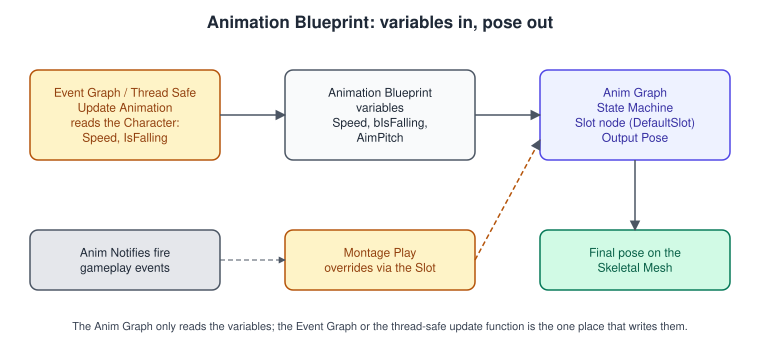
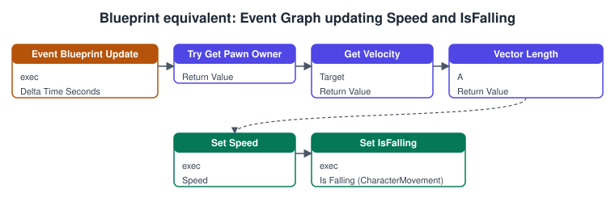
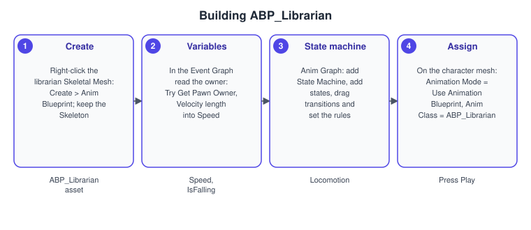
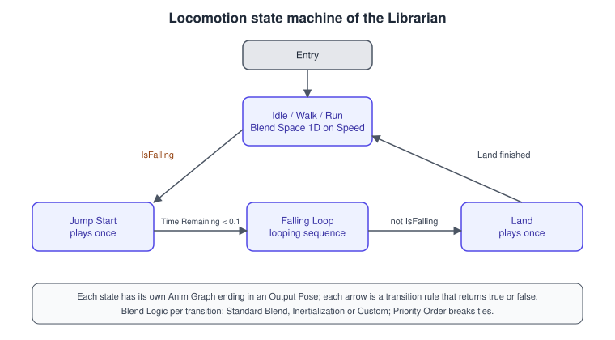

Animation Blueprints and State Machines
|
This content was generated with the assistance of AI and should be verified against the official documentation before being relied on in production. |
A skeletal mesh is only a posed bag of vertices until something decides, every frame, which pose it should have. In Unreal Engine that decision is made by an Animation Blueprint: a specialised Blueprint that reads the state of the game (is the character moving, falling, holding a book), runs a graph that blends animation assets and procedural nodes, and outputs the final pose for the skeletal mesh. The Bookshelf’s librarian (ALibrarianCharacter, the NPC that re-shelves books) uses one: it idles, walks and runs depending on speed, jumps and lands, and plays a "reach for the shelf" montage when it picks up a book.
The facts on this page were checked in November 2026 against the Unreal Engine 5.8 documentation (released 2026-06-17, latest hotfix found 5.8.4). The animation system runs on every platform the engine supports; pose evaluation costs CPU time, which is the limit on mobile. This page covers the classic Animation Blueprint workflow. Procedural rigging, retargeting and Motion Matching are in Control Rig and Motion Matching, and cinematic animation in Sequencer Cinematics. For the maths behind bone transforms see Rotations and Quaternions and Coordinate Spaces and Transforms; Unity’s equivalent is Animation and Mecanim.
Assets of the animation system
-
A Skeleton is a hierarchy of bones and the shared identity that animation assets are authored against. Animations made for one skeleton play on any skeletal mesh that uses that skeleton.
-
A Skeletal Mesh is the skinned mesh bound to a skeleton. Several meshes (for example different librarians) can share one skeleton and one Animation Blueprint.
-
An Animation Sequence is a clip: keyed bone transforms over time, plus curves (float values such as a footstep weight or a material parameter) and notifies (events at points in time). Sequences can be additive (a delta pose, for leaning or breathing) and can carry root motion.
-
A Blend Space blends several sequences by one or two input values. A Montage sequences clips with named sections for one-shot actions. Both are described below.
-
An Animation Blueprint (
UAnimBlueprint, which compiles to a class derived fromUAnimInstance) is the graph that combines everything.
Animation Blueprints: two graphs, one pose

An Animation Blueprint has two main graphs with different jobs:
-
The Event Graph is an ordinary Blueprint graph. It runs on the game thread and is where you read the state of the owner (the character, its movement component, gameplay data) and store the results in variables of the Animation Blueprint. Its entry point is Event Blueprint Update Animation, which fires every frame with the delta time. There is also Event Blueprint Initialize Animation for caching references once.
-
The Anim Graph is not a normal Blueprint graph. It is a graph of animation nodes whose wires carry poses, and it ends in an Output Pose node. It evaluates the pose; it should read variables, not run gameplay logic.
The rule of thumb is "variables in, pose out". Keeping computation out of the Anim Graph is what lets Unreal evaluate animation on worker threads: the engine’s multi-threaded animation update runs the Anim Graph (and functions marked thread safe) in parallel with the game thread, so the Event Graph’s job should shrink to copying values. Complex projects move the update into a Blueprint Thread Safe Update Animation function or into C++.

Creating and assigning an Animation Blueprint
You create one from the Content Browser with Add > Animation > Animation Blueprint (choosing the Skeleton), or by right-clicking a Skeletal Mesh asset and choosing Create > Anim Blueprint. The creation dialog lets you set an optional Template Animation Blueprint and a Parent Class; a parent class is how a C++ UAnimInstance subclass becomes the base of the Blueprint. It has no effect until it is assigned: on the character’s Skeletal Mesh Component set Animation Mode to Use Animation Blueprint and set Anim Class to the asset.

-
Right-click the librarian’s Skeletal Mesh and choose Create > Anim Blueprint, keeping its skeleton. Name it
ABP_Librarian. -
In the Event Graph get the pawn owner (Try Get Pawn Owner), read its velocity and store its length in
Speed; read whether the movement component is falling intobIsFalling. -
In the Anim Graph add a State Machine node, build the states and transitions described next, and connect the state machine to the Output Pose.
-
Select the character’s mesh component and set Animation Mode = Use Animation Blueprint, Anim Class = ABP_Librarian (or set it in the character Blueprint defaults). Press Play and watch the debug highlight of the active state.
State machines

A state machine holds a small set of states, each of which is its own mini Anim Graph that ends in an Output Pose, and transitions between them. At any time one state is active (or two, while a blend is in progress). It is the right tool when the character is in discrete modes with clear entry and exit rules: grounded, airborne, climbing, reading.
States
You create a state by right-clicking in the state machine graph and choosing Add State, by dragging from the border of a state or from the entry node, or by dragging an animation asset into the graph. The entry node defines the default state. A state has a Name, three optional events (Entered State Event, Left State Event and Fully Blended State Event, each a custom Blueprint event) and the option Always Reset on Entry, which restarts the state’s animation each time you enter it.
Transitions and their rules
A transition is a one-way arrow between two states. Its rule is a small graph that must return true for the transition to start. Typical rules compare an Animation Blueprint variable (bIsFalling), or use Time Remaining and Get Relevant Anim Time Remaining to leave a one-shot state when its clip is nearly finished. The transition’s details hold these settings:
| Setting | Meaning |
|---|---|
Duration |
The seconds the blend lasts, together with a blend curve. |
Blend Logic |
Standard Blend (the default) blends the two poses. Inertialization carries over the velocity and acceleration of the bones at the moment of the switch instead of cross-fading two poses; it needs an Inertialization node placed after the state machine in the Anim Graph, works best with short durations (Epic recommends under 0.4 seconds) and is a poor choice when the two poses are very different. Custom blends with a graph of your own. |
Blend Profile |
Optional per-bone blend speeds, so for example the legs blend faster than the arms. |
Priority Order |
When several outgoing transitions are true at once, the one with the smallest value wins. |
Automatic Rule Based on Sequence Player in State |
Starts the transition on its own when the most relevant clip in the state is about to end, using the remaining time and the AutomaticRuleTriggerTime value (negative values use the crossfade duration). It is the simplest rule for one-shot states such as Jump Start and Land. |
The Bidirectional option on the transition is documented as unsupported; create two transitions instead.
Conduits, aliases and machine settings
A conduit (right-click, Add Conduit) is a junction node: it lets several states share a rule, with one-to-many, many-to-one and many-to-many connections. Its rule is false by default, so tick Can Enter Transition and add rules to the transitions that leave it; to use one as the entry state, enable Allow Conduit Entry States on the machine. A State Alias (Add State Alias) represents a chosen set of states: any state it lists can leave through the alias’s transitions, and a Global Alias includes every state including ones added later, which is the clean way to write "from anywhere, when hit, go to Hit Reaction". The state machine itself has properties such as Max Transitions Per Frame, Skip First Update Transition, Reinitialize on Becoming Relevant, Create Notify Meta Data and Allow Conduit Entry States.
Do not confuse an animation state machine, which chooses poses, with the gameplay state machines of AI. The librarian’s decisions (find a book, walk to the shelf, re-shelve) belong to a StateTree or Behavior Tree, described in Behavior Trees and StateTree; the animation state machine only reports the result of those decisions as a pose.
Blend spaces and Aim Offsets
A Blend Space is an asset that plots sequences on a grid and blends between them according to one or two input values. The asset types are Blend Space (two axes), Blend Space 1D, Aim Offset and Aim Offset 1D (additive blend spaces used to aim the upper body at a pitch and yaw). The librarian uses a 1D blend space on Speed with Idle at 0, Walk at 150 and Run at 450 centimetres per second; a character that also strafes would use a two-axis space on speed and direction.
The Axis Settings in the Asset Details panel are:
| Setting | Meaning |
|---|---|
Name, Minimum Axis Value, Maximum Axis Value |
The label and range of the axis. Input values are clamped to the range. |
Grid Divisions |
How many divisions the axis has; samples snap to the grid with Snap to Grid, or are triangulated freely when you turn Use Grid off. |
Smoothing Time, Smoothing Type |
Seconds the input takes to move towards its target (0 means no time smoothing), with Averaged, Linear, Cubic, Ease In/Out, Exponential or Spring Damper behaviour. Damping Ratio and Max Speed apply to some types. |
Wrap Input |
Treats the axis as circular, for a direction in degrees. |
Axis to Scale Animation |
Scales the play rate of the sample animations along an axis, which helps keep feet from sliding. |
Samples are listed under Blend Samples; each sample has Weight Speed and Smoothing options, and Per Bone Overrides allow different weight speeds for chosen bones. Notify Trigger Mode decides whose notifies fire while blending: all animations, the highest-weighted one, or none. In the editor, hold Ctrl over the grid to preview a blend position, and watch for the red highlights that flag thin triangles or badly placed samples. In an Animation Blueprint you use the asset through a Blend Space Player node, or the Blend Space Graph and Blend Space Evaluator nodes for more control.
Montages: one-shot actions
An Animation Montage is an asset for animation that gameplay triggers at a moment of its choosing: an attack, a pickup, a reaction. A montage arranges sequences in Slots, and slots are grouped in Slot Groups. Sequences played in the same slot override each other. Different slots can run at once, for example an upper-body slot and a lower-body slot. A montage plays through the Anim Graph’s Slot node: where the Slot node sits in the graph decides what the montage overrides (typically right after the locomotion state machine).
A montage is divided into named Sections (create one by right-clicking the top track and choosing Create New Section). Sections can play in any order, you can jump to one by name, and the Montage Sections panel sets the default order. A Start, Loop, End structure is the common use, as in a reload animation. Notifies sit in the notify track and are edited in the Details panel, with Montage Notify and Montage Notify Window types available only to montages.
To play one from Blueprint, use the Play Montage node, which has Play Rate, Starting Position and Starting Section inputs and the output pins On Completed, On Blend Out, On Interrupted, On Notify Begin and On Notify End. Montages can replicate root motion in network games, but the Play Montage node itself must be replicated manually with an RPC (see Networking and Replication). Without a Slot node in the Anim Graph, a montage plays but you see nothing.
Anim Notifies
A notify is an event placed at a time in an animation: a footstep sound at the moment the heel lands, a particle puff, a gameplay moment such as "the book leaves the shelf now".
-
Notify: a single event at one point in time.
-
Notify State: an event with a duration, with begin, tick and end callbacks.
-
Montage Notify, Montage Notify Window and Disable Root Motion: montage-specific types. They need the montage to be played through the Play Montage node.
-
Sync Marker: used for marker-based synchronisation when blending animations, so that left and right foot phases line up.
You add a notify by right-clicking the notify track of the timeline; a custom notify event is created with Add Notify > New Notify, and a skeleton notify is saved with the Skeleton asset, so save the Skeleton. To react in an Animation Blueprint use Add Anim Notify Event in the Event or Transition graph. Notifies have a Notify Trigger Chance (0 never, 1 always), a Notify Filter Type that can filter by LOD, and, in montages, a Montage Tick Type of Queued or Branching Point. Branching Point is a more precise, synchronous and costlier option for notifies that change gameplay. Custom notify classes override Received Notify, Received Notify Begin, Received Notify Tick or Received Notify End in Blueprint.
Linked anim graphs, layers and other building blocks
-
Linked Anim Graphs and Linked Anim Layers let one Animation Blueprint embed another, so a shared locomotion graph can be reused by several characters while each supplies its own weapon or tool layer. Linked instances created by a post-process anim instance are also supported.
-
Post-process Animation Blueprints run after the main one on a mesh, for corrective or procedural passes (IK, physics, foot placement).
-
Inertialization, described with transitions above, is the modern replacement for long cross-fades.
-
Layered Blend per Bone and Slot nodes combine upper-body actions with lower-body locomotion.
-
5.8 adds an experimental Animation Layering plugin with the nodes Copy Bone Motion, Copy Bone Advanced and Bone Mask.
Complete C++ example: the librarian’s anim instance, a notify and a montage
The librarian’s Animation Blueprint is created with ULibrarianAnimInstance as its parent class. The C++ class computes Speed and bIsFalling; the Blueprint’s Anim Graph reads them. A custom notify tells the shelf to release a book at the right frame, and ALibrarianCharacter plays the pickup montage.
// LibrarianAnimInstance.h
#pragma once
#include "CoreMinimal.h"
#include "Animation/AnimInstance.h"
#include "LibrarianAnimInstance.generated.h"
class ACharacter;
class UCharacterMovementComponent;
UCLASS()
class BOOKSHELF_API ULibrarianAnimInstance : public UAnimInstance
{
GENERATED_BODY()
public:
virtual void NativeInitializeAnimation() override;
virtual void NativeUpdateAnimation(float DeltaSeconds) override;
protected:
/** Horizontal speed in centimetres per second; read by the locomotion blend space. */
UPROPERTY(BlueprintReadOnly, Category = "Locomotion")
float Speed = 0.0f;
/** True while the movement component is falling; read by the state machine rules. */
UPROPERTY(BlueprintReadOnly, Category = "Locomotion")
bool bIsFalling = false;
private:
UPROPERTY(Transient)
TObjectPtr<ACharacter> OwnerCharacter;
UPROPERTY(Transient)
TObjectPtr<UCharacterMovementComponent> Movement;
};// LibrarianAnimInstance.cpp
#include "LibrarianAnimInstance.h"
#include "GameFramework/Character.h"
#include "GameFramework/CharacterMovementComponent.h"
void ULibrarianAnimInstance::NativeInitializeAnimation()
{
Super::NativeInitializeAnimation();
OwnerCharacter = Cast<ACharacter>(TryGetPawnOwner());
Movement = OwnerCharacter != nullptr ? OwnerCharacter->GetCharacterMovement() : nullptr;
}
void ULibrarianAnimInstance::NativeUpdateAnimation(float DeltaSeconds)
{
Super::NativeUpdateAnimation(DeltaSeconds);
if (Movement == nullptr)
{
return;
}
Speed = Movement->Velocity.Size2D();
bIsFalling = Movement->IsFalling();
}The custom notify subclasses UAnimNotify; you add it to a sequence from the notify track, and it appears in the Add Notify menu by its class name.
// AnimNotify_BookRelease.h
#pragma once
#include "CoreMinimal.h"
#include "Animation/AnimNotifies/AnimNotify.h"
#include "AnimNotify_BookRelease.generated.h"
/** Fired at the frame where the librarian's hand lets go of the book. */
UCLASS(meta = (DisplayName = "Book Release"))
class BOOKSHELF_API UAnimNotify_BookRelease : public UAnimNotify
{
GENERATED_BODY()
public:
virtual void Notify(USkeletalMeshComponent* MeshComp, UAnimSequenceBase* Animation,
const FAnimNotifyEventReference& EventReference) override;
};// AnimNotify_BookRelease.cpp
#include "AnimNotify_BookRelease.h"
#include "Components/SkeletalMeshComponent.h"
#include "LibrarianCharacter.h"
void UAnimNotify_BookRelease::Notify(USkeletalMeshComponent* MeshComp, UAnimSequenceBase* Animation,
const FAnimNotifyEventReference& EventReference)
{
Super::Notify(MeshComp, Animation, EventReference);
// The notify also fires in the editor preview, where the owner is not a librarian.
if (ALibrarianCharacter* Librarian = Cast<ALibrarianCharacter>(MeshComp->GetOwner()))
{
Librarian->OnBookReleased();
}
}// LibrarianCharacter.h (excerpt)
UCLASS()
class BOOKSHELF_API ALibrarianCharacter : public ACharacter
{
GENERATED_BODY()
public:
/** Starts the reach-for-the-shelf montage. */
UFUNCTION(BlueprintCallable, Category = "Librarian")
void PlayReshelveMontage();
/** Called by the Book Release notify. */
void OnBookReleased();
protected:
UPROPERTY(EditDefaultsOnly, Category = "Librarian")
TObjectPtr<UAnimMontage> ReshelveMontage;
private:
void HandleMontageEnded(UAnimMontage* Montage, bool bInterrupted);
};
// LibrarianCharacter.cpp (excerpt)
void ALibrarianCharacter::PlayReshelveMontage()
{
UAnimInstance* AnimInstance = GetMesh()->GetAnimInstance();
if (AnimInstance == nullptr || ReshelveMontage == nullptr)
{
return;
}
// Montage_Play returns the length in seconds, or 0 when nothing could be played.
if (AnimInstance->Montage_Play(ReshelveMontage, 1.0f) > 0.0f)
{
FOnMontageEnded EndDelegate;
EndDelegate.BindUObject(this, &ALibrarianCharacter::HandleMontageEnded);
AnimInstance->Montage_SetEndDelegate(EndDelegate, ReshelveMontage);
}
}
void ALibrarianCharacter::HandleMontageEnded(UAnimMontage* Montage, bool bInterrupted)
{
UE_LOG(LogBookshelf, Log, TEXT("Reshelve montage ended, interrupted: %s"),
bInterrupted ? TEXT("yes") : TEXT("no"));
}In Blueprint the same montage call is the Play Montage node with the mesh as its target, and the notify is an Anim Notify event in the Event Graph or a custom notify class. For a pure Blueprint project, do the Event Graph variable update shown above instead of the C++ class. Because the Anim Graph reads Speed and bIsFalling by name, both approaches work with the same state machine.
Common mistakes
-
Never assigning the Anim Class. The Animation Blueprint is created but the mesh uses Use Animation Asset; nothing animates.
-
Gameplay logic in the Anim Graph. It runs on worker threads and should be limited to reading variables and blending.
-
No Slot node. A montage plays but its animation is invisible. Add a Slot node after the state machine.
-
The wrong skeleton. An animation made for another skeleton cannot be used; retarget it (see Control Rig and Motion Matching).
-
Transition rules that flicker. A rule that depends on a noisy value (speed near the threshold) makes the machine jump between states; use hysteresis, or an automatic rule based on the sequence player.
-
Long cross-fades between very different poses. Use Inertialization for short blends, a custom blend or an intermediate state when poses are far apart.
-
Overlapping animations in the same slot. They override each other; give upper-body and lower-body actions different slots.
-
Notifies on blended-out animations. Check Notify Trigger Mode and Notify Trigger Chance, and remember that a montage notify needs the Play Montage node.
-
Skeleton notifies not saved. Notifies created with New Notify are stored in the Skeleton asset; save it.
-
Replicating nothing. Montages are local: replicate the action and play the montage on every machine, as described in the networking page.
-
Reading velocity every frame in many instances in the Event Graph. Cache the movement component once in the initialize event or in C++.
Performance notes
-
Animation evaluation is CPU work per skeletal mesh per frame. Use LOD-based animation (lower bone counts and fewer nodes at distance) and the Notify Filter Type LOD limit for crowds.
-
Keep the Anim Graph simple and thread-safe so multi-threaded update can run it; move heavy computation out of the Event Graph into C++ or a thread-safe function.
-
Prefer a handful of states with Automatic Rule Based on Sequence Player in State to complex rule graphs.
-
Fewer blended poses cost less. A 2D blend space with many samples evaluates every active sample, so keep sample counts modest and prefer 1D where it will do.
-
Montage Branching Point ticking is more precise and costs more than Queued; use it only for notifies that change gameplay.
-
Profile with
stat animand Unreal Insights (see Profiling and Optimization); for large crowds consider Mass Entity (see Mass Entity).
What changed recently
| Version | Change |
|---|---|
UE 4.x to UE5 |
Matinee is replaced by Sequencer, and animation gains Control Rig, the IK Retargeter and Motion Matching alongside the Animation Blueprint. Inertialization and linked anim graphs make large Animation Blueprints easier to share. |
UE 5.8 (2026-06-17) |
Transitions to conduits can be given a priority, so conduit transitions can be ordered relative to transitions to other states. The Blend Space Player library exposes set and get of accumulated time to Blueprint. Montage track properties are exposed to Blueprint, negative blend times on montages are guarded against, and notify state end events fire correctly when montage advance is driven by forced positions. An experimental Animation Layering plugin adds Copy Bone Motion, Copy Bone Advanced and Bone Mask nodes, Animation Mixing in Sequencer is experimental, and Control Rig Physics is in beta. |
Source: Unreal Engine 5.8 Release Notes
Where the books are outdated
The animation material of the books sits in Unreal Engine 4.X By Example by Benjamin Carnall (chapter 3, UE 4.10 and 4.11), in Unreal Engine: Game Development from A to Z by Joanna Lee, John P. Doran and Nitish Misra (module 1, chapters 5 and 6, UE 4.7 to 4.10) and in Unreal Engine 5 Game Development with C++ Scripting by Zhenyu George Li and E. Wyn Roberts (chapter 7, UE 5.0). Skeletons, Animation Blueprints, state machines and blend spaces are still the core of the system. What is newer than the versions the books target:
| Topic | In UE 5.8 |
|---|---|
Blending between states |
Inertialization as a Blend Logic option, Blend Profile per bone, and Priority Order for transitions. |
Reuse of animation logic |
Linked anim graphs and linked anim layers, and post-process Animation Blueprints. |
Threading |
Multi-threaded animation update with thread-safe update functions, instead of doing all work in the Event Graph. |
Locomotion selection |
Motion Matching with Pose Search and Control Rig for procedural work (see Control Rig and Motion Matching); the 5.0-era chapters predate them. |
Cinematic animation |
Sequencer replaces Matinee for authored sequences; Animation Mixing in Sequencer (experimental in 5.8) adds layering and cross fades. |
Input driving the animation |
Enhanced Input drives the character, which the Animation Blueprint reads through variables (see Enhanced Input). |
See also
-
Control Rig and Motion Matching: procedural rigs, retargeting and Pose Search.
-
Sequencer Cinematics: authoring animation on a timeline.
-
Actors and Components: the skeletal mesh component.
-
Gameplay Framework: Character and CharacterMovement, the source of
Speed. -
Blueprints Visual Scripting: the Event Graph is an ordinary Blueprint graph.
-
C++ and Blueprints Together: a C++ parent class for the Animation Blueprint.
-
Behavior Trees and StateTree: decision-making state machines, a different thing.
-
Networking and Replication: replicating montages.
-
Rotations and Quaternions and Coordinate Spaces and Transforms: bone transforms.
-
Animation and Mecanim: Unity’s Animator, for comparison.